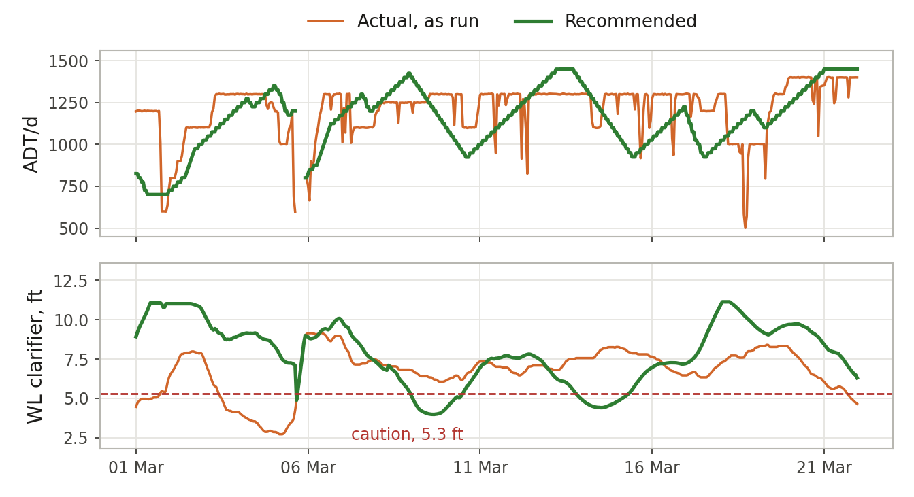

Leading the Intelligent Factory: Chapter 9
How fast to run
The best rate is the one the whole plant can hold.
Draft for review
Spread 1
Full rate, then a hard cut
The pressure. Every ton carries fixed cost, so the push is always to run full. But rate swings cost you too: chemicals, steam, quality, and the upset that follows a hard cut.
What goes wrong today. A unit can run faster than the plant around it can feed it or take from it. The operator has one lever and no forward view of the tanks. So the rate runs full until a level alarms, and then it is cut hard. The cut upsets the process, and the climb back takes hours.
What AI changes. This is the decision of how fast to run. A machine can watch every inventory around the unit and project each one a few hours ahead. A tank that will be in trouble in four hours is treated as in trouble now. The answer is a small move early, not a large move late.
What still needs people. Setting the bands. More protection for a tank costs a little rate, and that is a trade your superintendents should make on purpose. The operator still makes the move.
Spread 2
A real example: a digester and its liquor
A continuous digester could make 1,450 tons a day. On its good hours, the recaust plant behind it could supply white liquor for about 1,400. There was no slack between them.
Over 4,953 running hours, the rate barely moved two-thirds of the time. In the other third it moved hard. 1,182 hours had a change of more than 50 tons a day, and the largest move in one hour was 625. The white liquor clarifiers sat below 4 feet for 11.3% of the hours.
We wrote six plain rules. Start from full rate. Project each level four hours ahead. Trim 25 or 50 tons a day when a level heads for its limit. Never move more than 50 in an hour. Come back up slowly. Then we replayed the rules against the same hours.
In the replay
Largest move: 625 down to 50
More hours near full rate, 11.7% against 7.8%, and fewer hours with the clarifiers low, 6.7% against 11.3%.
A replay is not a trial. The next step is four to six weeks with the recommendation on the operator’s screen, and the operator’s agreement logged. We do not put a production number on it until then.

Questions for Monday morning
- What sets our rate today: a plan, or the last alarm?
- Which tank or chest limits us most often?
- How large is our typical rate change, and how many do we make in a day?
- How many hours a month do we run at full rate?
- Who decides how much inventory protection is worth how much rate?
In practice. Envoy builds rate rules from your own history, replays them against the hours you ran, and publishes the result as a centerline target.